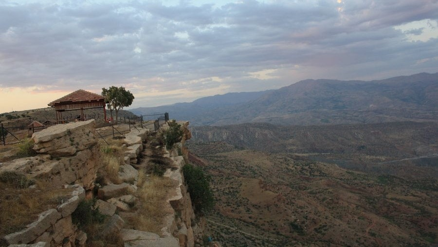
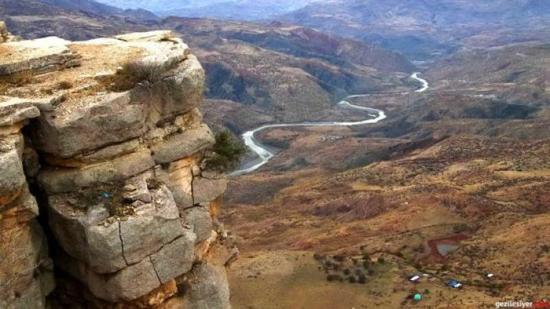

Siirt, Mezopotamya ve Anadolu uygarlıklarının kesiştikleri alanda kurulmuştur. Bu yüzden kuzeyinde ve güneyinde ortaya çıkan uygarlıklar, yörenin kültürel gelişmesinde etkili olmuştur. Bölgenin dağlık oluşu ve ulaşım imkanlarının yetersizliği, gelişmiş kentlerin kültür merkezlerinin ortaya çıkmasını engellemiştir. Yakın zamana kadar Siirt tarihinin İ.Ö. IV.Yy. öncesi dönemleri bilinmemekteydi. 1963 yılında Halet ÇAMLIBEL ve R.J.BRAIDWOOD başkanlığında kurulan Güneydoğu Anadolu Tarih Öncesi Araştırmaları Karma Projesi kapsamında, Siirt İli’nde yapılan yüzey araştırmalarında Neolitik, Kalkolitik, Tunç ve Helenistik, Roma, Bizans–İslam ve Yakınçağ’ı kapsayan dönemlere ait buluntular ortaya çıkarılmıştır. Günümüzdeki kültürel yapı Türk – İslam Kültürü’nün etkisiyle biçimlenmiştir.
İlimizde yeryüzü şekilleri daha çok yüksek dağlar ile platolardan oluşmaktadır. Siirt’in kuzeyi ve doğusu yüksek ve sarp kesimlerdir. Genel olarak Güneydoğu Toroslar adıyla anılan bu dağ sırası, doğudan güneydoğuya genişçe bir yay çizerek Hakkari Dağları’yla birleşmektedir. Dicle Vadisi’ne eğimli olan bu yüksek ve sarp kesimde yer alan önemli dağlar ve bunların özellikleri şöyle sıralanabilir: Muş Güneyi Dağları’ndan sonra, Bitlis Çayı Vadisi’nin doğusunda, dağlar güneye doğru açılarak Siirt’in doğusunu kaplar. Yükseltisi hızla azalarak Güneydoğu Düzlükleri’ne doğru sokulan bu dağlar, bir yandan da Hakkari Dağları’yla birleşir. Siirt Doğusu Dağları genellikle tek tek kütleler halinde yükselmektedir. Bu kütleler, Dicle Irmağı’na karışan küçük akarsuların açtığı vadilerle parçalanmış durumdadır.
Ulu Cami :
Veysel Karani Hz. Türbesi :
İbrahim Hakkı Hz. Türbesi ve Makamı :
Bunlar hakkında daha fazla bilgi almak istiyorsanız aşağıdaki butona ya da mirasımız alanına gidin.
MİRASLARIMIZ